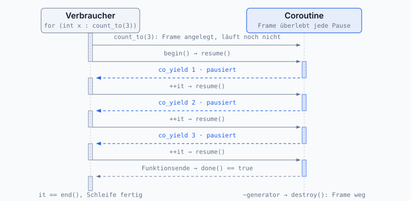

Schwerpunkte: STL, OOP, Templates, Smart Pointer, RAII
2026-09-16
std::generator (C++20/23)Ein kurzer Blick auf Geschichte, Einsatzgebiete und Motivation.
| Jahr | Was passiert |
|---|---|
| 1969 | Ken Thompson und Dennis Ritchie schreiben bei Bell Labs UNIX |
| 1972 | Ritchie entwickelt C als typisierten Nachfolger von B |
| 1979 | Bjarne Stroustrup beginnt bei Bell Labs mit „C with Classes“ |
| 1985 | Erste kommerzielle Version, jetzt unter dem Namen C++ (das ++ ist der C-Operator) |
| 1998 | C++98, der erste ISO-Standard |
| 2003 | C++03, nur kleine Korrekturen |
| 2011 | C++11, der große Umbruch: auto, Lambdas, Move-Semantik, Smart Pointer, Threads |
| 2014 | C++14, Feinschliff an C++11 |
| 2017 | C++17: optional, variant, string_view, Structured Bindings, parallele Algorithmen |
| 2020 | C++20: Concepts, Ranges, Modules, Coroutines, <=> |
| 2023 | C++23: std::print, std::expected, mehr Ranges |
| 2026 | C++26 in Arbeit: Reflection, std::execution, Pattern Matching |
Seit C++11 kommt alle drei Jahre ein neuer Standard. In diesem Kurs arbeiten wir mit C++23.
| Bereich | Beispiele |
|---|---|
| Betriebssysteme | Windows, macOS, Linux-Kernel-Tools, Android-Runtime |
| Browser | Chrome (Blink), Firefox (Gecko), Safari (WebKit) |
| Compiler / Toolchains | GCC, LLVM/Clang, Swift Compiler, MSVC |
| Spiele-Engines | Unreal, Unity-Core, CryEngine, Frostbite |
| Embedded / Automotive | AUTOSAR, Steuergeräte, IoT, CAN-Stacks |
| Finance / Trading | Niedrig-Latenz-Systeme bei Goldman, Citadel, Jane Street |
| High-Performance Computing | Klimamodelle, Physik-Simulationen, CERN/LHC |
| AI-Frameworks (Backend) | TensorFlow, PyTorch, ONNX-Runtime |
| Datenbanken | MySQL, MongoDB, ScyllaDB, ClickHouse |
| Wissenschaft / Raumfahrt | NASA Mars Perseverance Helicopter, James Webb Telescope |
„Modernes C++“ (ab C++11) sieht anders aus als das C++ aus den 1990ern.
Klassisches C++ (vor C++11)
char*)Refresher: Variablen, Kontrollstrukturen, Klassen, STL.
nullptr statt NULL / 0Klassisches
NULList ein Makro für0, also einint. Bei Funktions-Überladung führt das zu Mehrdeutigkeiten und stillem Falsch-Aufruf.
nullptr (C++11) hat einen eigenen Typ: std::nullptr_tintNULL oder 0 für Zeiger schreibenbool → if (ptr) funktioniert weiterhinenum class: typsichere AufzählungenKlassisches
enumist eigentlich nurintmit Namen: globaler Scope, implizite Casts, Namenskollisionen.enum class(C++11) löst alles auf einmal.
enum Color { Red, Green, Blue }; // alt: Red, Green, Blue global
enum class Mode { On, Off, Standby }; // neu: Mode::On, gescopet
int n = Red; // alt: implizit OK ⚠
int m = Mode::On; // neu: FEHLER, kein impliziter Cast
int k = static_cast<int>(Mode::On); // neu: Cast nur explizit
enum class Status : std::uint8_t { Ok, Warn }; // eigener Underlying-Typintenum classauto & decltype: Typ-DeduktionLass den Compiler den Typ bestimmen, wenn er aus dem Kontext eindeutig ablesbar ist. Spart Tipparbeit, vermeidet implizite Konvertierungen.
// auto: Typ wird aus dem Initializer abgeleitet
auto i = 42; // int
auto d = 3.14; // double
auto s = std::string{"hi"}; // std::string (NICHT: const char*)
auto& ref = container[0]; // Referenz
const auto& cref = container[0]; // const-Referenz, keine Kopie
// decltype: übernimmt den Typ eines Ausdrucks (auch ohne Auswertung)
int x = 0;
decltype(x) y = 5; // int
decltype(x + 1.0) z = 1; // double (Ausdruck wird nicht ausgeführt)
// Trailing return type: Rückgabetyp hängt vom Parameter ab
template <typename T, typename U>
auto add(T a, U b) -> decltype(a + b) { return a + b; }auto? Iteratortypen, Lambda-Returns, lange Template-Typenauto deduziert ohne & / const → bei Range-for fast immer const auto&{}Eine Syntax für alle Initialisierungen: fundamentale Typen, Klassen, Container, Aggregates. Verbietet zusätzlich stille Genauigkeitsverluste.
int x{7}; // Skalar
std::vector<int> v{1, 2, 3, 4}; // Container, Initializer-List
std::map<std::string,int> m{ {"a",1}, {"b",2} }; // verschachtelt
struct Point { double x, y; };
Point p{1.0, 2.0}; // Aggregate
Sensor s{"temp-1", 30.0}; // Konstruktor
// Narrowing, nur Brace-Init schlägt Alarm
int n{3.14}; // FEHLER: double -> int
int o = 3.14; // stillschweigend (= 3)
// Vector-Falle: () vs {}
std::vector<int> a(10, 5); // 10 Elemente, alle 5
std::vector<int> b{10, 5}; // 2 Elemente: 10 und 5{}, außer wenn ein Konstruktor mit Größen-Argumenten gemeint ist (vector(size, value))Widget w(); ist eine Funktions-Deklaration!)// if mit Init-Statement (C++17)
if (auto it = map.find(k); it != map.end()) {
std::cout << it->second << '\n';
}
// switch
switch (mode) {
case Mode::A: /* ... */ break;
case Mode::B: [[fallthrough]];
case Mode::C: /* ... */ break;
default: /* ... */;
}
// Schleifen
for (int i = 0; i < n; ++i) { /* klassisch */ }
for (const auto& v : container) { /* range-based */ }
while (!done) { /* ... */ }Range-based for: Lesender Zugriff auf jedes Element, ohne unnötige Kopien (const auto& bindet als const-Referenz).
[[fallthrough]]: Beispielenum class LogLevel { Error, Warning, Info, Debug };
void log(LogLevel level, const std::string& msg) {
switch (level) {
case LogLevel::Debug:
std::cout << "[debug] ";
[[fallthrough]]; // -> Info
case LogLevel::Info: std::cout << "[info] " << msg << '\n'; break;
case LogLevel::Warning: std::cout << "[warning] " << msg << '\n'; break;
case LogLevel::Error: std::cout << "[error] " << msg << '\n'; break;
}
}log(LogLevel::Debug, "x") → [debug] [info] x. Ohne [[fallthrough]] würde der Compiler warnen.
Besser: Member direkt initialisieren, statt erst default-erzeugen und dann im Konstruktor-Body zuweisen.
Gut: Member-Initializer-List
Member werden direkt mit den richtigen Werten erzeugt.
Schlecht: Zuweisung im Body
Erst default-konstruiert, dann nochmal zugewiesen, bei string, vector, … unnötig teuer; bei const/Referenz-Membern unmöglich.
const std::string& als Rückgabe: Zugriff ohne Kopie, Aufrufer darf nicht ändernname() const: Methode verändert das Objekt nicht (nur lesender Zugriff)noexcept: verspricht: keine Exceptionbool triggers(double v) const: s.triggers(35.0) → true, falls v > threshold_name_) als Konvention für Member| Alt (C / pre-C++11) | Modern (C++11/17/20) |
|---|---|
NULL, 0 als Pointer |
nullptr |
enum { ... } |
enum class { ... } |
typedef int Foo; |
using Foo = int; |
new / delete von Hand |
std::make_unique / std::make_shared |
| Roh-Pointer als Eigentümer | unique_ptr<T>, shared_ptr<T> |
printf("%d", x) |
std::format("{}", x) / std::print (C++23) |
C-String char*, strcmp |
std::string, std::string_view |
C-Array T arr[N] |
std::array<T, N>, std::vector<T> |
throw() / dyn. Exception-Spec |
noexcept |
register, Trigraphs, auto_ptr |
entfernt (C++17) |
Funktions-Macros (#define MAX(...)) |
constexpr-Funktion / Template |
Faustregel: linke Spalte → rechte Spalte ist fast immer der bessere Refactor, aber erst nach Tests und nur wenn es im Scope ist.
Container, Algorithmen, Iteratoren und eine Übung.
| Kategorie | Container | Typischer Einsatz |
|---|---|---|
| Sequenz | vector, array, deque, list |
Datenreihen, Puffer |
| Assoziativ | map, set (+ multi…) |
sortierter Schlüssel-Zugriff, Log(n) |
| Hash-basiert | unordered_map, unordered_set |
schneller Lookup, O(1) amortisiert |
| Container-Adapt. | stack, queue, priority_queue |
Algorithmische Datenstrukturen |
Faustregel: Standardmäßig std::vector, cache-freundlich, kontiguös, schnell.
#include <algorithm>
#include <numeric>
#include <vector>
std::vector<int> v{5, 2, 8, 1, 9, 3};
std::sort(v.begin(), v.end()); // sortieren
auto it = std::find(v.begin(), v.end(), 8); // suchen
int sum = std::accumulate(v.begin(), v.end(), 0); // Summe
auto cnt = std::count_if(v.begin(), v.end(),
[](int x){ return x > 3; });
std::transform(v.begin(), v.end(), v.begin(), // in-place
[](int x){ return x * x; });Algorithmen + Iteratoren: STL-Algorithmen arbeiten nicht direkt auf Containern, sondern auf Iterator-Bereichen
[begin, end).begin()zeigt aufs erste Element,end()auf die Position hinter dem letzten.
std::sort(v.begin(), v.end()); heißt also: sortiere alle Elemente von v.
| Kategorie | Kann | Typische Container |
|---|---|---|
input |
einmal vorwärts lesen | Streams |
output |
einmal vorwärts schreiben | Streams, back_inserter |
forward |
mehrfach vorwärts laufen | std::forward_list |
bidirectional |
vorwärts und rückwärts | std::list, std::map |
random-access |
direkter Zugriff wie bei Arrays | std::vector, std::array |
Iteratoren verbinden Container und Algorithmen. Nicht jeder Algorithmus funktioniert mit jedem Container: z. B. braucht
std::sortRandom-Access, läuft aufstd::vector, aber nicht direkt aufstd::list(dort:list::sort()als Member).
Ziel: Temperatursensor-Datenreihe verarbeiten.
std::vector<double> temps mit Messwerten.std::copy_if)std::map<int, int>)std::partial_sort oder nth_element)std::transform+ std::remove_if)auto [min_it, max_it] = std::minmax_element(temps.begin(), temps.end());
double mean = std::accumulate(temps.begin(), temps.end(), 0.0) / temps.size();
std::vector<double> hot;
std::copy_if(temps.begin(), temps.end(), std::back_inserter(hot),
[t = 30.0](double x){ return x > t; });
std::map<int, int> histogram;
for (double x : temps) ++histogram[static_cast<int>(x) / 10 * 10];
std::vector<double> top3(3);
std::partial_sort_copy(temps.begin(), temps.end(),
top3.begin(), top3.end(), std::greater<>{});| Mechanismus | Syntax | Bedeutung | Wann verwenden? |
|---|---|---|---|
| By value | void f(T x) |
Funktion bekommt eine Kopie | Kleine Typen oder eigene Kopie nötig |
| By const-ref | void f(const T& x) |
Keine Kopie, nur lesen | Große Objekte, die nicht verändert werden |
| By ref | void f(T& x) |
Keine Kopie, darf verändert werden | Wenn die Funktion das Original ändern soll |
| By pointer | void f(T* x) |
Adresse, kann nullptr sein |
Optionaler Parameter oder C-APIs |
| By rvalue-ref | void f(T&& x) |
Darf aus dem Argument „moven“ | Move-Semantik / effiziente Ressourcenübernahme |
Faustregel: Kleine Werte per Kopie, große nur-lesende Objekte per
const&, veränderbare per&, optionale per Pointer, Ressourcen per Move.
void print(int x); // by value: int ist klein
void printName(const std::string& s); // const-ref: keine Kopie, nur lesen
void normalize(std::vector<double>& v); // ref: verändert das Original
void setSensor(Sensor* s); // pointer: darf nullptr sein
void store(std::string&& name); // rvalue-ref: darf movenT&& bedeutet nicht automatisch „Ownership“, sondern: Die Funktion darf den Inhalt übernehmen bzw. daraus std::move verwenden.
Für Konstruktoren ist oft die einfachere Variante praktischer, by value + move:
// Standardargument: port ist optional
void connect(std::string_view host, int port = 8080);
// Überladung: gleicher Name, unterschiedliche Parametertypen
int max(int a, int b);
double max(double a, double b);
// Lambda: anonyme Funktion
auto is_even = [](int x) { return x % 2 == 0; };
// Generic Lambda (C++14): Parametertypen werden automatisch erkannt
auto plus = [](auto a, auto b) { return a + b; };
// constexpr: kann zur Compile-Zeit ausgewertet werden
constexpr int square(int x) { return x * x; }
static_assert(square(5) == 25); // wirklich beim Kompilieren geprüftconstexpr: kann zur Compile-Zeit ausgewertet werden, wenn die Argumente konstant sind (nicht: muss immer)Große Objekte können sicher per Wert zurückgegeben werden. Der Compiler vermeidet Kopien durch Copy Elision / NRVO oder nutzt einen günstigen Move.
return v; greift meist NRVO; sonst wird gemovedDer Compiler kann eine benannte lokale Variable direkt im Speicher des Rückgabewerts erzeugen. Dadurch entfällt die Kopie beim
return.
Faustregel beim Return lokaler Variablen:
std::move beim Zurückgeben lokaler Variablen ist meist unnötig und blockiert die Optimierung.
struct zu classC-Struktur: Bündel von Variablen unter einem Namen. C++-Klasse: erweitert das Konzept um Funktionen als Member.
struct und class sind technisch gleichwertig. Einziger Unterschied: Default-Zugriff (public bzw. private).struct für passive Objekte (reiner Datensatz), class für aktive Objekte (Datenabstraktion mit Invarianten).Inline oder außerhalb definieren
Abgeleitete Klasse (Derived, Child): erbt Variablen und Funktionen einer anderen Klasse. Basisklasse (Base, Parent): die nächste Klasse, die diese Member bereitstellt.
Eine Ableitung behält alle Eigenschaften der Basis und fügt hinzu, sie kann nie etwas entfernen.
Syntax: class Derived : [Zugriffsattribut] Base { ... };
struct A {};
struct B : A {};
void f(A a) {} // Kopie
void g(B b) {} // Kopie
void f_ref(A& a) {} // Referenz, gleiches gilt für A*
void g_ref(B& b) {} // Referenz, gleiches gilt für B*
A a;
B b;
f(a); // ok, ebenso f(b), f_ref(a), f_ref(b), g_ref(b)
g(b); // ok, ebenso g_ref(b), aber NICHT g(a), g_ref(a)
A a1 = b; // ok, auch A& a2 = b (ein B "ist ein" A)
// B b1 = a; // Compilerfehler: ein A ist kein BEin
Bdarf überall stehen, wo einAerwartet wird. Umgekehrt nicht.
public, protected, privateZiel: direkten Zugriff auf die interne Darstellung verhindern, damit Objekte nicht in einen inkonsistenten Zustand geraten (Zugriffskontrolle).
| Spezifizierer | Wer darf zugreifen? |
|---|---|
public |
alle: Methoden, abgeleitete Klassen, Code außerhalb der Klasse |
protected |
Methoden der Klasse und abgeleitete Klassen |
private |
nur Methoden der Klasse selbst (intern) |
: public, : protected, : privateDas Attribut hinter dem Doppelpunkt legt fest, wie sichtbar die geerbten Member in der Ableitung sind:
| Member in der Basis | : public |
: protected |
: private |
|---|---|---|---|
public |
public | protected | private |
protected |
protected | protected | private |
private |
unzugänglich | unzugänglich | unzugänglich |
Konstruktor (ctor): spezielle Memberfunktion, die beim Erzeugen einer Instanz läuft. Ziel: Initialisierung und Ressourcenbeschaffung. Syntax:
T(...), gleicher Name wie die Klasse, kein Rückgabetyp.
constexpr seinDefault-Konstruktor T(): Konstruktor ohne Argumente. Jede Klasse hat immer einen: implizit, explizit oder gelöscht.
Die Initializer-List initialisiert Datenmember oder ruft den Basis-Konstruktor auf, bevor der Konstruktor-Body läuft. (Nicht verwechseln mit
std::initializer_list.)
const- und Referenz-Member müssen über Initializer-List oder In-Class-Initializer gesetzt werden:
Member werden in der Reihenfolge ihrer Deklaration initialisiert, nicht in der Reihenfolge der Initializer-List.
Warning
Initializer-List in derselben Reihenfolge wie die Deklarationen schreiben. Compiler warnen bei Abweichung (-Wreorder, MSVC C5038).
Uniform Initialization
{}(C++11, auch List-Initialization): jedes Objekt gleich initialisieren, unabhängig vom Typ.
Vorteil: weniger redundante Typnamen bei Argumenten und Rückgabewerten.
Polymorphie: Gemeinsames Interface in der Basisklasse, konkretes Verhalten in abgeleiteten Klassen.
#include <numbers>
class Shape {
public:
virtual ~Shape() = default; // wichtig bei Vererbung
virtual double area() const = 0; // pure virtual -> abstrakte Klasse
virtual void draw() const { /* default */ } // optionale Default-Impl.
};
class Circle : public Shape {
public:
explicit Circle(double r) : r_{r} {}
double area() const override { return std::numbers::pi * r_ * r_; }
void draw() const override { /* ... */ }
private:
double r_;
};| Regel | Warum? |
|---|---|
virtual ~Shape() = default; |
Sicheres Löschen über Shape* oder std::unique_ptr<Shape> |
= 0 |
Macht eine Methode rein virtuell: abgeleitete Klassen müssen sie implementieren |
| Abstrakte Klasse | Entsteht, sobald mindestens eine Methode rein virtuell ist |
override |
Compiler prüft, ob wirklich eine Basismethode überschrieben wird |
final |
Verhindert weiteres Überschreiben oder Ableiten |
Eine polymorphe Basisklasse braucht einen virtuellen Destruktor. Rein virtuelle Methoden definieren verpflichtende Schnittstellen.
overrideundfinalmachen Vererbung sicherer und eindeutiger.
Obwohl
sden statischen Typstd::unique_ptr<Shape>hat, zeigt es tatsächlich auf einCircle-Objekt. Virtuelle Methoden wiearea()unddraw()werden deshalb zur Laufzeit an die passende Implementierung der tatsächlichen Klasse weitergeleitet.
Der Aufruf wird zur Laufzeit an die richtige Methode des tatsächlichen Objekttyps gebunden, typischerweise über eine vtable.
Note
std::numbers::pi statt M_PI: M_PI ist nicht standardisiertes C++. Seit C++20 gibt es std::numbers::pi aus <numbers>.
Dynamischer Dispatch: Obwohl
snur alsShapebekannt ist, wird beiarea()zur Laufzeit die Methode der konkreten Form aufgerufen.
Container speichert Shape-Zeiger, die echten Objekte sind Circle, Square, … Durch virtual ruft s->area() automatisch Circle::area() bzw. Square::area() auf.
Merke: Polymorphe Objekte nie by value übergeben, nur per Referenz oder Smart Pointer.
C++ erlaubt Mehrfachvererbung: eine Klasse kann mehrere direkte Basisklassen haben. Das ist mächtig, kann aber zu Mehrdeutigkeit führen.
class Vehicle { public: int mass() const; };
class Land : public Vehicle { /* ... */ };
class Air : public Vehicle { /* ... */ };
class AirCar : public Land, public Air { /* ... */ }; // Diamant!
AirCar bond;
bond.mass(); // ✗ ambiguous: welcher Vehicle? Land::Vehicle oder Air::Vehicle?
bond.Land::mass(); // ✓ explizite Auflösung mit Scope-OperatorDiamantenproblem: zwei Wege von
AirCarführen zuVehicle→AirCarenthält den Vehicle-Teil doppelt. Code, Daten und Konstruktor-Aufrufe werden mehrdeutig.
virtualbei der Vererbung sorgt dafür, dass die gemeinsame Basisklasse nur einmal im Endobjekt existiert, der Diamant wird zur Raute.
Land/Air reichen ihn nicht durchVererbung drückt aus: „X ist ein Y“ (
Carist einVehicle). Komposition drückt aus: „X hat ein Y“ (Carhat einenEngine). Komposition ist meist die flexiblere und einfachere Wahl.
Vererbung („is-a“)
Kopplung Basis ↔︎ Ableitung ist eng. Polymorphie nötig? Sonst zu mächtig.
Eine Interface-Klasse ist eine abstrakte Klasse, die nur reine virtuelle Methoden und keine Daten enthält, das C++-Pendant zu Java-/C#-
interface. Mehrfachvererbung davon ist kein Diamant (keine Daten doppelt).
class Drawable { // Interface, nur Methoden
public:
virtual ~Drawable() = default;
virtual void draw() const = 0; // = 0 → muss überschrieben werden
};
class Serializable {
public:
virtual ~Serializable() = default;
virtual std::string to_json() const = 0;
};
class Sensor : public Drawable, public Serializable { // mehrere "Rollen", sicher
public:
void draw() const override { /* zeichnen */ }
std::string to_json() const override { return /* ... */; }
};*able, I* oder im interface::-Namespace| Stack | Heap | |
|---|---|---|
| Lebenszeit | an Scope gebunden ({ ... }) |
bis die Ressource freigegeben wird |
| Freigabe | automatisch beim Verlassen des Scopes | manuell (delete) oder automatisch durch RAII / Smart Pointer |
| Allokation | automatisch für lokale Variablen | dynamisch zur Laufzeit (new, make_unique, Container, …) |
| Geschwindigkeit | sehr schnell | tendenziell langsamer |
| Größe | begrenzt, pro Thread (Windows: 1 MB, Linux: ~8 MB) | deutlich größer, pro Prozess |
| Thread-Sicht | jeder Thread hat seinen eigenen Stack | gemeinsam genutzt von allen Threads |
| Bei Überlauf | Stack-Overflow → meist Crash | Allokation kann fehlschlagen → std::bad_alloc |
Faustregel: Lokale Objekte stack-nah halten. Heap verwenden, wenn Objekte groß sind, polymorph gespeichert werden oder ihre Lebenszeit den aktuellen Scope überdauern muss.
Modernes C++ heißt nicht „Heap vermeiden um jeden Preis“. Wichtig ist: Ownership sauber kapseln. Der Heap ist okay, solange RAII die Freigabe übernimmt.
Was hier wirklich passiert:
| Bestandteil | Liegt auf … | Aufräumen durch … |
|---|---|---|
v-Objekt selbst |
Stack | Compiler beim Scope-Ende |
v-Elemente (1 Mio) |
Heap | ~vector() ruft delete[] auf |
→ Heap-Nutzung ist deterministisch und exception-safe, ohne dass du new/delete schreibst.
Schlussregel: Niemals rohes new/delete. Nutze automatische Variablen, STL-Container und Smart Pointer, dann ist Cleanup deterministisch und exception-safe.
new / delete: die Mechanik
new T(args)macht zwei Dinge auf einmal: Speicher reservieren und Objekt konstruieren.deletemacht beide rückwärts.
new/delete vs. C-malloc/free: new ruft den Konstruktor, ist typsicher (liefert T* statt void*), kennt sizeof(T) selbst und wirft std::bad_alloc statt nullptr zurückzugeben.
Kardinalsünden (alle = Undefined Behavior): new mit free mischen · new[] mit delete · delete zweimal · Pointer überschreiben vor delete
Definition: ein dynamisch allokierter Block, den das Programm nicht mehr erreichen kann, aber auch nicht freigegeben hat. Heap-Block bleibt belegt, niemand kennt mehr seine Adresse.
_CrtDumpMemoryLeaks), AddressSanitizer (/fsanitize=address), Valgrind (Linux)Wenn du
new/deletevon Hand schreibst, lauern fünf klassische Fallen. Die ersten haben wir schon gesehen, jetzt kommen die anderen vier im Detail.
| Falle | Was geht schief? |
|---|---|
| Memory Leak (schon gesehen) | Pointer überschrieben oder Funktion verlassen, ohne delete |
| Double-Free | delete zweimal auf demselben Pointer aufgerufen |
| Dangling Pointer / Use-after-free | Auf bereits freigegebenen Speicher zugreifen |
delete vs. delete[] |
Array mit delete (oder umgekehrt) freigegeben |
| Exception-Safety | Wurf zwischen new und delete → kein Cleanup |
→ Gemeinsame Wurzel: Ownership ist im Code nicht sichtbar. Ein int* sagt nicht, wer freigeben muss.
Wie es im Alltag entsteht (geteiltes Ownership):
Klassisches Ownership-Problem: zwei Stellen denken, sie wären verantwortlich.
unique_ptrlöst das strukturell, es ist nicht kopierbar, nur einer kann freigeben.
Stack-Variante, Pointer auf eine lokale Variable zurückgeben:
delete immer p = nullptr;, dann crasht’s sofort, nicht zufällig.weak_ptr.lock() machen Use-after-free unmöglich.delete vs. delete[]-VerwechslungWarum es überhaupt zwei Operatoren gibt:
new[]reserviert oft mehr Speicher als angefragt, vor dem Pointer steht meist die Anzahl der Elemente, damitdelete[]weiß, wie viele Destruktoren es aufrufen muss.
Bei int (kein Destruktor) merkst du oft nichts. Bei eigenen Klassen → Crash oder Leak.
→ std::unique_ptr<T[]> und std::vector<T> machen es intern automatisch richtig.
Manueller Workaround mit try/catch:
Bei zwei Ressourcen: vier Pfade. Bei drei: acht. Wartungs-Hölle. RAII löst das in null zusätzlichen Code-Zeilen, der Destruktor läuft immer.
Resource Acquisition Is Initialization: Ressource im Konstruktor erworben, im Destruktor automatisch freigegeben.
class File {
public:
explicit File(const char* path) : fp_{std::fopen(path, "r")} {
if (!fp_) throw std::runtime_error{"cannot open file"};
}
~File() { std::fclose(fp_); } // gültiges File ⇒ gültiges fp_
File(const File&) = delete; // nicht kopierbar,
File& operator=(const File&) = delete; // sonst zwei fclose auf demselben FILE*
private:
std::FILE* fp_;
};Merksatz: RAII bindet die Lebensdauer einer Ressource an die Lebensdauer eines Objekts. Der Destruktor läuft beim Verlassen des Scopes, auch bei Exceptions.
So werden Dateien, Speicher, Locks, Sockets in modernem C++ verwaltet.
Rule of 0: wenn möglich keine Spezialmember selbst schreiben. Ressourcen über STL-Typen halten (std::vector, std::string, std::unique_ptr, …) → der Compiler erzeugt passende Konstruktoren, Zuweisungen und Destruktoren.
Rule of 3 (C++98): wenn eine Klasse eine dieser Funktionen selbst definiert, müssen meist alle drei betrachtet werden: Destruktor, Copy-Konstruktor, Copy-Assignment.
Rule of 5 (C++11): mit Move-Semantik kommen zwei weitere hinzu: Move-Konstruktor und Move-Assignment.
Bevorzugt Rule of 0. Nur Klassen, die direkt Ownership einer Ressource verwalten, sollten Destruktor, Copy- oder Move-Operationen selbst definieren.
Rohe Pointer zeigen auf Speicher, aber sie sagen nicht, wem das Objekt gehört.
T* beschreibt Zugriff, aber keine Ownership.std::unique_ptr<T>: exklusiver Besitzerstd::shared_ptr<T>: geteiltes Ownershipstd::weak_ptr<T>: beobachtet ohne Besitznew/delete im Anwendungs-Code möglichst vermeiden.→ Nächster Abschnitt: unique_ptr, shared_ptr, weak_ptr, wann welcher?
std::unique_ptr: exklusives OwnershipEin klarer Owner, automatische Freigabe, keine Kopien, nur Move.
auto p = std::make_unique<Sensor>("temp-1", 80.0);
if (p->triggers(85.0)) { /* Sensor hat ausgelöst */ } // wie normaler Pointer
// nicht kopierbar, aber movebar
auto q = std::move(p); // Ownership wandert von p nach q;
// p ist danach leer (== nullptr)
// auto r = q; // Compile-Fehler: Kopieren verboten
std::vector<std::unique_ptr<Sensor>> sensors;
sensors.push_back(std::move(q)); // Ownership wandert in den vectornew/delete von Hand: immer std::make_unique<T>(args…)std::shared_ptr: geteiltes OwnershipMehrere Besitzer, automatische Freigabe beim letzten. Lebensdauer wird über einen Referenzzähler verwaltet.
auto s2 = s1; ist keine Kopie des Objekts, es wird nur ein weiterer Besitzer erzeugt.
shared_ptr können sich gegenseitig am Leben halten → Leakweak_ptr als LösungZwei
shared_ptrs, die sich gegenseitig halten, kommen nie auf Refcount 0 → Speicherleck.
Faustregel: in einer Hierarchie hält der Parent den Child per shared_ptr, der Child verweist auf den Parent per weak_ptr.
Verwende
std::shared_ptrnur, wenn mehrere Stellen wirklich gemeinsam Ownership haben. Sonst iststd::unique_ptrdie bessere Default-Wahl.
std::weak_ptr: beobachten ohne OwnershipNicht-besitzender Beobachter für Objekte, die von
shared_ptrverwaltet werden. Verlängert die Lebensdauer nicht.
| Einsatz | Warum weak_ptr? |
|---|---|
| Parent-Child-Beziehungen | Rückverweis soll das Parent-Objekt nicht künstlich am Leben halten |
| Caches | Objekt darf verschwinden, wenn es sonst niemand mehr braucht |
| Observer-Pattern | Beobachter besitzt das beobachtete Objekt nicht |
Merksatz: shared_ptr besitzt · weak_ptr beobachtet · lock() macht daraus kurzzeitig wieder einen sicheren shared_ptr.
| Situation | Verwende |
|---|---|
| Einzelner Owner, dyn. Objekt | std::unique_ptr<T> |
| Mehrere Owner, unklarer Lifetime | std::shared_ptr<T> |
| Rückwärts-/nichtbesitzende Referenz | std::weak_ptr<T> |
| Funktionsparameter, nur Beobachten | T* oder const T& |
| Arrays | std::vector<T> (fast immer besser als unique_ptr<T[]>) |
Faustregel:
make_unique/make_shared, nienewdirekt.
template <typename T>
T max_of(const T& a, const T& b) { // ← Rückgabetyp T:
return (a < b) ? b : a; // beide Argumente
} // müssen denselben Typ haben
max_of(3, 7); // erzeugt max_of<int>
max_of(2.5, 1.8); // erzeugt max_of<double>
max_of(std::string{"a"}, std::string{"b"}); // erzeugt max_of<std::string>
// max_of(3, 2.5); // ⚠ Compile-Fehler, T mehrdeutig:
// int oder double?Function Template = Funktions-Schablone. Der Compiler leitet
Taus den Argumenten ab und erzeugt bei Bedarf eine konkrete Funktion daraus (max_of<int>,max_of<double>, …). Das Template selbst ist noch kein Code: Code entsteht erst durch die Instanziierung.
<typename T, typename U>) oder explizite Angabe max_of<double>(3, 2.5).template <typename T, std::size_t N> // T = Typ-Parameter
class RingBuffer { // N = Nicht-Typ-Parameter
public: // (Compile-Time-Wert)
void push(const T& v) {
data_[head_] = v;
head_ = (head_ + 1) % N;
if (size_ < N) ++size_;
}
private:
std::array<T, N> data_{};
std::size_t head_ = 0;
std::size_t size_ = 0;
};
RingBuffer<double, 16> recent_temps; // T=double, N=16
RingBuffer<LogEntry, 1000> log; // T=LogEntry, N=1000Class Template = Klassen-Schablone.
Tbestimmt den Elementtyp,Neine feste Größe zur Compile-Zeit. Der Compiler erzeugt aus jedem<T, N>-Paar eine eigene konkrete Klasse.
Concepts beschränken Templates auf Typen, die bestimmte Eigenschaften erfüllen. Pendant zu Rust-Traits oder Java-Interfaces, geprüft zur Compile-Zeit, ohne Laufzeit-Overhead.
#include <concepts>
template <std::integral T> // T muss ganzzahlig sein
T gcd(T a, T b) {
while (b) { a %= b; std::swap(a, b); }
return a;
}
gcd(12, 8); // ✓ T=int
gcd(2.5, 1.0); // ✗ "constraint std::integral<double> not satisfied"
// Eigenes Concept: "T unterstützt a+b, Ergebnis ist wieder T"
template <typename T>
concept Addable = requires(T a, T b) { { a + b } -> std::same_as<T>; };
template <Addable T> T sum(const std::vector<T>& v);<concepts>: std::integral, std::floating_point, std::copyable, std::same_as, …try {
auto data = load_config("config.json");
process(data);
} catch (const std::invalid_argument& e) {
log_error("bad input:", e.what());
} catch (const std::runtime_error& e) {
log_error("runtime failure:", e.what());
} catch (...) { // Catch-all
log_error("unknown error");
throw; // Weiterwerfen
}throw? Stack-UnwindingWenn eine Exception fliegt, rollt der Stack auf: auf jedem Frame werden lokale Objekte zerstört (Destruktoren laufen), bis ein passender
catchgefunden wird.
Reihenfolge beim throw: ~vector(v) → ~ifstream(f) → catch-Handler in outer.
throw und catch läuft nur Destruktor-Code lokaler Objektestd::terminate → Programm-Abbruchtry/finally, funktioniert nur dank RAIIclass SensorError : public std::runtime_error {
public:
SensorError(std::string sensor, std::string msg)
: std::runtime_error{std::move(msg)}, sensor_{std::move(sensor)} {}
const std::string& sensor() const noexcept { return sensor_; }
private:
std::string sensor_;
};
throw SensorError{"temp-1", "calibration lost"};std::exception / std::runtime_error erben: konsistente Hierarchiewhat() override für Nachrichtstd::exception ← Basis aller Standard-Exceptions
├── std::logic_error ← Programmierfehler
│ ├── std::invalid_argument ← falsches Argument
│ ├── std::domain_error ← Wert außerhalb des erlaubten Bereichs
│ ├── std::length_error ← zu groß / zu klein
│ └── std::out_of_range ← .at(), Index außerhalb Container
├── std::runtime_error ← Laufzeit-Probleme
│ ├── std::range_error ← Wertebereich-Überschreitung (Berechnung)
│ ├── std::overflow_error ← arithmetischer Überlauf
│ └── std::system_error ← OS-Fehler (errno)
├── std::bad_alloc ← new schlägt fehl
├── std::bad_cast ← dynamic_cast<T&> schlägt fehl
└── std::bad_optional_access ← optional::value() leerlogic_error = „ich hab Mist gebaut, eigentlich hätte ich’s prüfen müssen“, meist Bugruntime_error = „Welt ist heute schwierig“: Datei weg, Netz weg, Speicher vollruntime_error für vorhersehbare Laufzeit-Fehler, logic_error für Bug-Symptomestd::exception fängt alle Standard-Exceptions auf einmal: guter äußerer Sicherheits-Handler| ✓ Gut | ✗ Anti-Pattern |
|---|---|
throw MyError{...}; (by value) |
throw new MyError{...}; (Java-Reflex) |
catch (const std::exception& e) (const-ref) |
catch (std::exception e) (slicing!) |
| Spezifischere Catches zuerst | catch (...) zuerst → andere unerreichbar |
Destruktor noexcept (Default) |
Destruktor wirft → std::terminate |
| Exception nur für echte Fehler | Exception für normalen Kontrollfluss |
-fno-exceptions, MSVC: /EH weglassen). Alternative: Status-Codes, std::expected (siehe nächste Folie).std::expected<T, E>: die moderne Alternative (C++23)Erfolgswert oder Fehler: eines von beiden, typsicher in einem Container. Pendant zu Rusts
Result<T, E>und HaskellsEither. Ideal wenn Fehler erwartbar sind und nicht außergewöhnlich.
#include <expected>
enum class ParseError { EmptyInput, InvalidChar, OutOfRange };
std::expected<int, ParseError> parse_int(std::string_view s) {
if (s.empty()) return std::unexpected{ParseError::EmptyInput};
int v{};
auto [_, ec] = std::from_chars(s.data(), s.data() + s.size(), v);
if (ec != std::errc{}) return std::unexpected{ParseError::InvalidChar};
return v;
}
if (auto r = parse_int("42"); r) std::cout << *r; // ✓ Erfolg
else std::cout << static_cast<int>(r.error());expected für erwartbare · optional wenn nur „ja/nein“| Level | Kurz gesagt |
|---|---|
| No-throw | Kann nicht fehlschlagen (noexcept) |
| Strong | Fehler? Alles bleibt wie vorher (Commit-or-Rollback) |
| Basic | Fehler? Objekt bleibt benutzbar, keine Leaks |
| No guarantee | Fehler? Zustand nach Exception nicht garantiert, vermeiden |
Exception-Safety beschreibt, was nach einem Fehler garantiert noch stimmt. RAII sorgt dafür, dass Ressourcen auch bei Exceptions sauber freigegeben werden.
noexcept auf Move-Operationen hilft STL-Containern, Move statt Copy zu nutzenstd::terminatestd::thread: die BasisC++20: std::jthread, join() automatisch im Destruktor + Stop-Token.
m.lock() / m.unlock() manuell, immer RAII-Wrapper!std::lock_guard (einfach), std::unique_lock (flexibel), std::scoped_lock (mehrere)std::async & FuturesHöheres Abstraktionsniveau als rohe Threads.
| Primitive | Zweck |
|---|---|
std::atomic<T> |
Lock-free atomare Operationen |
std::condition_variable |
Warten auf Bedingung |
std::promise/future |
Einmalige asynchrone Wertübergabe |
std::shared_mutex (C++17) |
Reader-Writer-Lock |
std::latch/barrier (C++20) |
Synchronisationspunkte |
Faustregeln:
std::generatorLazy Sequenzen: Werte erst dann berechnen, wenn sie gebraucht werden.
Eager: alles vorab berechnen
Speicher für alle Werte, Abbruchkriterium im Erzeuger, keine unendlichen Folgen.
Lazy: Werte auf Abruf
Der Verbraucher entscheidet, wie viel gerechnet wird.
IEnumerable<T> + yield return, Python yield, JavaScript function*co_yield), seit C++23 fertig verpackt als std::generator<T>std::generator: Beispiel#include <generator> // C++23
std::generator<int> count_to(int n) {
for (int i = 1; i <= n; ++i) {
co_yield i; // Wert nach außen, Funktion pausiert
}
} // Ende → Sequenz zu Ende
std::generator<const std::string&> read_lines(std::string text) { // Referenz: keine Kopie pro Zeile
std::istringstream in{std::move(text)};
for (std::string line; std::getline(in, line); )
co_yield line;
}
for (int x : count_to(3)) std::cout << x; // 1 2 3
for (const auto& l : read_lines(s)) std::cout << l; // zeilenweise, lazyco_yield macht die Funktion zur Coroutine, der Rückgabetyp std::generator<T> sagt dem Compiler, wieco_yieldstd::generator<T> liefert T (kopiert), std::generator<const T&> liefert Referenzen auf den Wert im Frameco_yield? Die Mechanik
Die Kontrolle pendelt bei jedem
co_yieldund jedem++itzwischen Verbraucher und Coroutine, auf einem Thread. Der Coroutine-Frame hälti,nund die Wiedereinstiegsstelle über jede Pause hinweg.
Sobald der Compiler co_yield im Funktionskörper sieht, baut er die Funktion zu einer State-Machine um. Was er dafür anlegt:
promise_type: Protokoll zwischen Compiler und Rückgabetyp: initial_suspend, yield_value, final_suspend, unhandled_exceptionco_yield wird zur Pause-Stelle, die Kontrolle geht an den Verbraucher zurückstd::coroutine_handle: „Zeiger“ auf den Frame mit resume(), done(), destroy()std::generator<T>, das der Aufrufer bekommt, es besitzt den Handle und zerstört den Frame im Destruktor
std::generatorimplementiertpromise_type+ Iterator für uns. Vor C++23 hat das jede Codebasis selbst geschrieben (cppcoro, eigeneGenerator<T>). Im Quellcode sehen wir von alldem nurco_yield.
std::generator ist eine View (Input-Range), alle Range-Adapter funktionieren:
Rekursion mit std::ranges::elements_of, die Werte des inneren Generators werden 1:1 durchgereicht:
struct Node { int value; std::vector<Node> children; };
std::generator<int> walk(const Node& n) {
co_yield n.value; // erst der Knoten ...
for (const Node& c : n.children)
co_yield std::ranges::elements_of(walk(c)); // ... dann alle Kinder rekursiv
}
for (int v : walk(tree)) std::cout << v << ' '; // 1 2 4 5 3 (Tiefensuche)| Regel | Warum |
|---|---|
| Parameter, die nach einer Pause noch gebraucht werden, by value | wandern in den Frame; Referenzen auf Temporäre hängen |
| Genau ein Durchlauf (Input-Range) | zweiter Durchlauf → Generator neu erzeugen |
Move-only, wie unique_ptr |
ein Frame, ein Besitzer |
Exceptions fliegen beim Weiterlaufen (begin(), ++it) |
nicht beim Erzeugen des Generator-Objekts |
| Coroutine ≠ Thread | alles auf einem Thread; für Parallelität weiter std::thread/async |
Visual Studio: std::generator ab VS 2022 17.13 mit /std:c++latest, im Schulungsprojekt gesetzt.
auto, Range-for, Lambdasmake_unique/make_shared statt newconst- und noexcept-Correctness als Gewohnheitstd::generator: Erzeuger und Verbraucher entkoppeln, Coroutine ≠ Thread/W4, Debug-Heap, ASan: Disziplin schafft NachhaltigkeitZusatzthemen: auf Nachfrage oder bei verbleibender Zeit.
T&& bindet an rvalues → Signal: „Ressourcen dürfen übernommen werden“std::move: Cast zu rvalueMerke:
std::movebewegt selbst nichts. Es markiert ein Objekt nur als „darf bewegt werden“ (Cast zu rvalue). Der eigentliche Move passiert im Move-Konstruktor oder Move-Assignment des Typs.
class Buffer {
public:
explicit Buffer(std::size_t n) : data_{new char[n]}, size_{n} {}
~Buffer() { delete[] data_; }
Buffer(const Buffer& other); // Copy-Ctor
Buffer& operator=(const Buffer& other); // Copy-Assign
Buffer(Buffer&& other) noexcept // Move-Ctor
: data_{other.data_}, size_{other.size_}
{
other.data_ = nullptr;
other.size_ = 0;
}
Buffer& operator=(Buffer&& other) noexcept; // Move-Assign
private:
char* data_{nullptr};
std::size_t size_{0};
};Wer eine Ressource direkt besitzt, muss Copy/Move/Destruktor bewusst regeln. Sonst: Rule of 0 bevorzugen,
std::vector,std::string,std::unique_ptrerledigen das automatisch.
Idee: Argumente werden an den Konstruktor von
Tweitergereicht, ohne ihre lvalue/rvalue-Eigenschaft zu verlieren. Kommt außen ein rvalue rein, soll innen auch ein rvalue ankommen.
Args...: beliebig viele Argument-Typen (Variadic Template)Args&&... args: Forwarding-References (keine rvalue-Refs, sie entstehen erst durch Template-Deduktion)std::forward<Args>(args)...: leitet jedes Argument genau so weiter, wie es angekommen istemplace, generische Wrapperstd::move vs. std::forward: Merksatz
std::movesagt: „Dieses Objekt darf bewegt werden.“std::forwardsagt: „Gib das Argument genau so weiter, wie es angekommen ist.“
Warum nicht einfach args... statt std::forward<Args>(args)...?
Innerhalb der Funktion haben args Namen, und alles mit Namen ist ein lvalue. Auch wenn außen ein rvalue reinkam, wäre args innen plötzlich ein lvalue → Move-Semantik geht verloren.
Note
Perfect Forwarding braucht man vor allem beim Schreiben generischer Bibliotheksfunktionen. Im normalen Anwendungscode kommt man oft lange ohne aus.
noexcept, wenn sie wirklich nicht werfen können, sonst nutzen STL-Container Copy statt Move (Exception-Safety)std::move(x): x bleibt gültig, aber sein Wert ist nicht mehr verlässlich. Erlaubt: Zuweisung, Destruktion, andere spezifizierte Operationenstd::move in den Memberreturn x; statt return std::move(x);: NRVO und impliziter Move wirken automatisch; explizites std::move blockiert NRVO